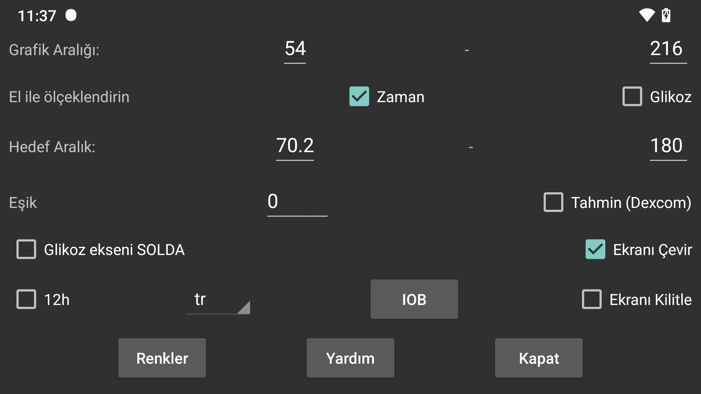

Egrilerin, taramalarin ve sayilarin renklerini degistirin. Koyu mod'a geçmek için, sag orta menü->Koyu mod'u kullanin.
Düsük ve yüksek bir deger verin, böylece ekranin alti verdiginiz düsük degere ve üstü verdiginiz yüksek degere karsilik gelir. Bu degerler yalnizca ekranda görüntülenen tüm glikoz degerleri bu sinirlar içinde oldugunda kullanilir. Aksi takdirde, sinirlar genisletilir ve tüm degerler görünür olur. Glikoz degeriniz 3 mmol/L (54 mg/dL) ve 9 mmol/L (162 mg/dL) arasinda oldugunda, ekran degerlerini 5 mmol/L ile 6 mmol/L arasina ayarlasaniz bile grafik 3'ten 9'a kadar bir glikoz ekseni görüntüler.
Glikozu Manuel Olarak Ölçekle açiksa, bunu degistirebilirsiniz: parmaginizi ekranin üstünde hareket ettirdiginizde, grafigin üst yarisi yukari ve asagi hareket eder; ekranin altinda hareket ettirdiginizde, grafigin alt yarisi yukari ve asagi hareket eder.
Ekranin yüksek glikoz tarafi farkli sekilde renklendirilmistir, böylece yüksek degerleri daha kolay görebilirsiniz. Aynisi düsük glikoz için de geçerlidir. Ekranin çok düsük glikoz degerini göstermek için kirmizi bir çizgi gösterilir.
Ekranin solundaki grafige glikoz seviyesinin sayilarini yerlestirin. Mevcut glikozunuzu ekranin ortasina yerlestirmek istiyorsaniz kullanislidir. Örnegin Wear OS'de.
Glikoz degerlerinin degisim oranina bir esik uygulayin. Sadece degisim orani 0'dan belirtilen miktarda saptiginda degisim orani oku yataydan farklidir. 0 ile 0,8 arasinda keyfi degerler kullanabilirsiniz. Esik, küçük mutlak degisim orani degerlerine fazla anlam verilmesini önlemek için kullanilir. Degisim oraninin yavasça yükselen bir glikoz degeri göstermesi çok olasidir ama gerçekte düsmektedir. Esik, daha temkinli bir ifade için kullanilir.
Dexcom sensörleri her gerçek degerle birlikte tahmini bir deger de gönderir. Bunu Google'da aradim ama bununla ilgili bir referans bulamadim. Sadece Dexcom'un 20 dakikaya kadar düsükleri önceden tahmin eden bir alarmi destekledigini buldum, bakiniz https://www.dexcom .com/g7/how-it-works#alerts
Bu degerleri 20 dakika sonrasina yerlestirdigimde pek uymadilar. 10 dakika sonrasina yerlestirdigimde çok daha iyi performans gösterdiler.
Bu seçenegi açtiginizda, bu tahmin edilen degerler Libre sensörlerinin geçmis degerlerinin Juggluco'da gösterildigi sekilde gösterilir. Ayrica sag orta menü->Geçmis'in isaretini kaldirarak bunlari kapatabilirsiniz. Juggluco'da bunlar alarmlar için kullanilmaz, sadece ne kadar iyi tahmin ettiklerini degerlendirmek için görüntüleyebilirsiniz.
Ekrani ters çevirir. Varsayilan olarak açiktir, aksi takdirde sensörü tararken yanlislikla Tamam'a dokunabilirsiniz.
Bazi kisiler portre (dikey) modu istiyor, ancak ben onu kapattim, çünkü glikoz grafiginin görüntülenmesi için uygun degil.
IOB, önceki dozlardan kanda ne kadar insülin kaldigini gösterir. Bunu kullanmak için, insülin dozlarini "HizliEtkili" kategorisindeki bir etiketin altina girmelisiniz. Sol menü->Ayarlar->Veri Degisimi->Web Sunucusu->Miktar lari Gir altindan hangi etiketlerin "HizliEtkili" oldugunu belirtebilirsiniz.
"Ekrani Kilitle" ayarlandiginda, ekranda görüntülenen zaman araligi sola kaydirilir, böylece mevcut zaman ekranin ayni noktasinda olur. Bazi kullanicilar Juggluco'yu kendilerinden birkaç metre uzakliktaki bir bilgisayarda bir Android emülatöründe çalistirir. "Ekrani Kilitle" kapatildiginda, mevcut glikoz degerinin konumu zaman ilerledikçe saga dogru hareket eder, böylece birkaç saat sonra artik görünmez olur. Bu, bilgisayar basina gitmeyi ve ekrani birkaç santimetre kaydirmayi gerekli kilar. "Ekrani Kilitle" açildiginda, bu dikkat dagitma artik gerekli degildir.
Juggluco seçilen dilde görüntülenir. Hiçbir dil kodu seçilmediginde, sistem dili kullanilir.